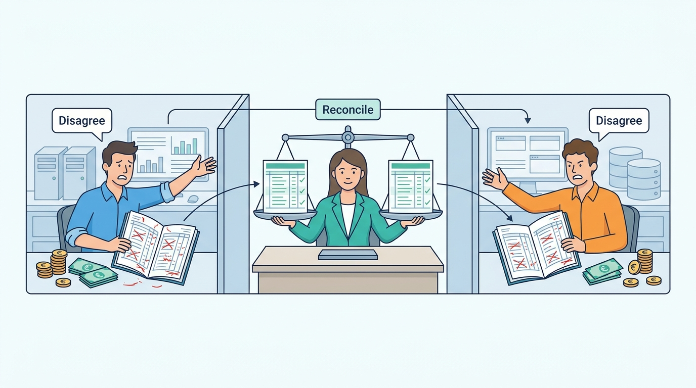

Part VI — INTEGRATION: Making Separate Systems Behave Like One
Built to Disagree and Recover: Events, Eventual Consistency and Reconciliation
AI-assisted: researched and written with Claude Code, images generated with the Gemini API. How this works

Image generated by Google Gemini (gemini-3-pro-image-preview)